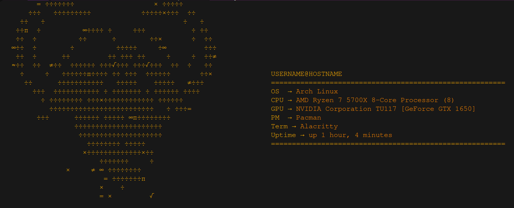

Shipwreckt
Fakefetch
Background
Fakefetch is the first real program I have ever created that I use daily apart from config files. I made fakefetch when I saw people complaining about neofetch being slow that is why I have called it fakefetch. In the start it was just 10 lines of bash echo commands which is like printing in python, so it was bascially bare theminimun, and I was not proud of this program I was like ok thats done just add it to my .bashrc and continue using Linux. After about a day I wanted to see if I could add more to it like the uptime, then comes what package manager im using and after a while I have made my own mini neofetch program that I can use on all of my computers.
What is Fakefetch
Fakefetch is alternative to neofetch, it is written in bash script like neofetch but is not a billion lines long or bloated.
Why Fakefetch?
The main reason why you should use Fakefetch is because it is a very flexible program being written in bash script; it is not a large program, only being one file large and does not slow down your computer at all unlike Neofetch. Fakefetch is also very hackable thanks to how I have commented on the code, meaning you can make your own Fakefetch versions and make it do whatever you want thanks to it being licensed under the GPL, so you have the right to redistribute it if you make your own versions that you can share with anybody.
How to install
$ git clone https://gitlab.com/Shipwreckt/fakefetch
Here is an example of fakefetch!
Source code on Gitlab